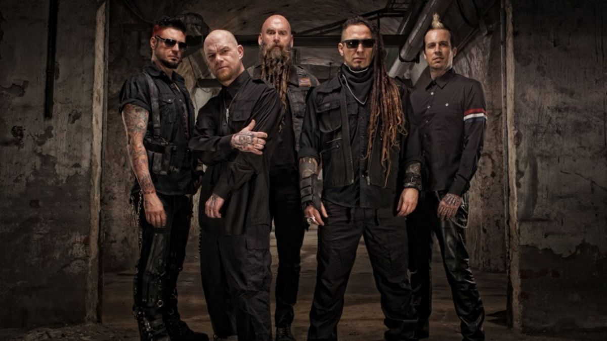
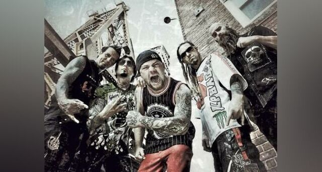
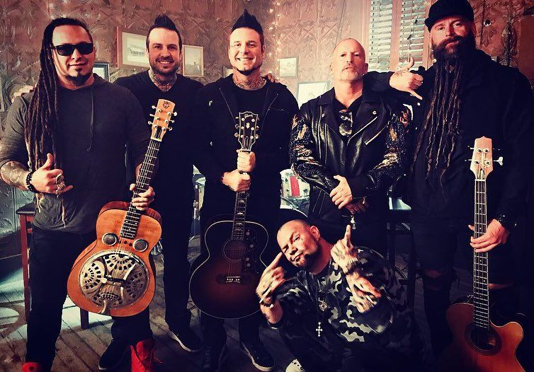

Five Finger Death Punch» (скорочено: Five Finger або Death Punch, а також як абревіатури 5FDP або FFDP) — американський хеві-метал гурт, заснований у 2005 році у Лас-Вегасі, штат Невада. До першого складу гурту входили: вокаліст Айвен Муді, гітарист Золтан Баторі[en], гітарист Калеб Бінґем, басист Метт Снелл та на ударних Джеремі Спенсер[en]. Бінґема пізніше замінив Даррелл Робертс[en] у 2006 році, якого у 2009 році замінив Джейсон Гук[en]. Метт Снелл покинув гурт у 2010 році, а на його місце було прийнято Кріса Кейла у 2011 році. Дебютний альбом гурту під назвою «The Way of the Fist» було представлено у 2007 році, який одразу стрімко набрав популярність із 500 000 проданих копій у США. Другий альбом гурту «War Is the Answer» вийшов у 2009 році та закріпив популярність Five Finger Death Punch із понад мільйоном проданих копій у США, за що отримав платинову сертифікацію від RIAA, а третій альбом, «American Capitalist», представлений 11 жовтня 2011 року, отримав «золото» вже через рік після виходу. Наступні три платівки гурту («The Wrong Side of Heaven and the Righteous Side of Hell, Volume 1», «The Wrong Side of Heaven and the Righteous Side of Hell, Volume 2» та «Got Your Six») також стали «золотими», що зробило гурт одним із найбільш комерційно успішних колективів десятиліття. Свій сьомий альбом під назвою «And Justice for Non» Five Finger Death Punch представили у 2018 році.
«Five Finger Death Punch» було засновано у 2005 році[2] колишнім басистом гурту «U.P.O.» Золтаном Баторі та ударником Джеремі Спенсером[3]. Басист Метт Снелл приєднався на початку 2006 року[4]. Пізніше того ж року Баторі зв'язався із колишнім вокалістом гурту «Motograter» Айвеном Муді, надіславши матеріал, записаний гуртом та попросив пройти прослуховування на позицію вокаліста[2]. Муді прилетів із свого дому у Денвері, штат Колорадо до Лос-Анджелеса та швидко розпочав працювати над записом матеріалом із гуртом[5]. Вже наприкінці 2006 року було записано дебютний альбом гурту під назвою «The Way of the Fist». У записі брав участь як другий гітарист Калеб Бінгем, який іноді виступав із гуртом під час шоу, проте пізніше на його місце було запрошено Даррелла Робертса[6]. Невдовзі після запису платівки гурт підписав контракт із лейблом «Firm Music», який входив у групу «The Firm»[7]. 10 липня 2007 року «Five Finger Death Punch» представили міні-альбом «Pre-Emptive Strike» ексклюзино у американському сегменті iTunes Store[8]. Дебютний сингл під назвою «The Bleeding» було представлено 13 липня 2007 року, а безпосередньо платівку — 31 липня 2007 року[9]. Альбом увійшов у чарт Billboard 200 на 199 позиції і згодом отримав «золоту» сертифікацію у 2011 році[10].
Гурт розпочав роботу над третім студійним альбомом у листопаді 2010 року на студії Hideout у Лас-Вегасі, Невада[29]. Басист Мет Снелл покинув «Five Finger Death Punch» у грудні 2010 року[30], а вже у червні 2011 року Кріс Кель був оголошений новим басистом гурту[31]. Офіційний реліз третьої платівки під назвою «American Capitalist» відбувся 11 жовтня 2011 року[32][33]; продюсером альбому став Кевін Чурко[34]. Дебютний сингл цієї платівки під назвою «Under and Over It» було представлено 27 липня 2011 року[35], а вже у вересні відбулась презентація музичного відео на цю пісню[36][37]. На підтримку альбому гурт перебував у турі «Share the Welt» протягом жовтня - грудня 2011 року із такими виконавцями на розігріві як All That Remains, Hatebreed та Rains, а протягом березня - квітня 2012 року — у турі «Furious and Deadly» із Soulfly, Windowpane та Persist[38]. Пісня «Back For More» стала частиною саундтреку до відеогри «Madden NFL 12»[39] та була представлена як цифровий сингл 13 вересня 2011 року[40]. Композицію «Remember Everything» гурт представив як другий офіційний сингл альбому у листопаді 2011 року[41], а музичне відео — у лютому 2012 року[42]. «Coming Down» стала третім офіційний синглом платівки «American Capitalist» у квітні 2012 року із музичним відео, оприлюдненим у червні[43][44]. За цю пісню гурт отримав нагороду «Independent Music Award» у категорії «важка / хардкор пісня» у 2013 році[45]. Протягом червня — серпня 2012 року гурт взяв участь у Trespass America Festival, організованого журналом «Metal Hammer», разом із такими виконавцями як «Battlecross», «God Forbid», «Emmure», «Pop Evil», «Trivium» і «Killswitch Engage»[46].

15 лютого 2013 року «Five Finger Death Punch» повідомили на своїй сторінці у Facebook, що працюють на четвертим альбомом, вихід якого заплановано на літо цього року[47] . 28 лютого було поширене фото, на якому вокаліст Айвен Муді працює над записом вокалу. 18 березня гурт анонсував виступ на фестивалі Mayhem Festival 2013, а також опублікував промо відео свого наступного туру разом із новою піснею «Here to Die»[47]. 1 травня 2013 року «Five Finger Death Punch» анонсували вихід двох альбомів під загальною назвою «The Wrong Side of Heaven and the Righteous Side of Hell», перша частина якого була представлена 30 липня, а друга – 19 листопада того ж року[48][49][50]. Під час п'ятої щорічної церемонії нагородження Golden Gods Awards «Five Finger Death Punch» виконали нову пісню разом із Робом Галфордом із «Judas Priest» під назвою «Lift Me Up»[51][52]. Ця композиція була представлена як сингл 14 травня 2013 року[53]. 6 червня «Five Finger Death Punch» представили обкладинку альбому «The Wrong Side of Heaven and the Righteous Side of Hell, Volume 1» та прев'ю синглу «Dot Your Eyes», а 30 липня - безпосередньо сам альбом. Платівка досягла 2 позиції у чарті Billboard 200 із 113 000 проданих копій протягом першого тижня, що зробило цей альбом комерційно найуспішнішим для гурту на той час[54]. 9 вересня 2013 року «Five Finger Death Punch» оприлюднили новий сингл під назвою «Battle Born» в очікуванні п'ятого студійного альбому «The Wrong Side of Heaven and the Righteous Side of Hell, Volume 2». 19 листопада гурт представив безпосередньо сам альбом, котрий також досяг 2 позиції у чарті Billboard 200[55][56][57]. 11 серпня 2014 року «Five Finger Death Punch» представили музичне відео на пісню «Wrong Side of Heaven», у якому показали безпритульних ветеранів, що страждають на посттравматичні стресові розлади після служби в армії і не отримують жодної допомоги[58].
12 грудня 2013 року «Five Finger Death Punch» в одному із інтерв'ю заявили, що розпочали роботу над своїм шостим студійним альбомом[59]. 14 січня 2015 року було анонсовано дати турне по США протягом квітня - травня 2015 року та намір гурту перебратись у студію для запису платівки[60]. 2 травня 2015 року «Five Finger Death Punch» представили назву нової роботи - «Got Your Six», а також тизер нової пісні під назвою «Ain't My Last Dance» на своїх сторінках у соціальних мережах[61]. Реліз альбому спочатку було заплановано на 28 серпня 2015 року, проте пізніше було відкладено на 4 вересня того ж року[62]. 19 травня 2015 року гурт анонсував спільний тур Північною Америкою разом із «Papa Roach» на підтримку прийдешнього альбому; компанію їм склали гурти «In This Moment» та «From Ashes to New»[63]. «Five Finger Death Punch» також відіграли сет на фестивалі «Download Festival» у 2015 році[64].

27 квітня 2016 року у журналі Billboard заявили, що лейбл Prospect Park, із яким співпрацює гурт, подав судовий позов на колектив за порушення умов контракту[65]. Основна причина полягала в тому, що гурт розпочав роботу над новою платівкою без узгодження із лейблом, і що відтепер «Five Finger Death Punch» планують працювати із лейблом Rise Records. У недавньому інтерв'ю вокаліст Айвен Муді заявий, що він завершить поточний тур та покине гурт у кінці 2017 року[66]. Проте наступного дня було опубліковано заяву на офіційному веб-сайті гурту FFDP, де зазначалось, що «плітки» про відхід Муді не є правдивими. Згідно із заявою, вокаліст планує розпочати роботу над власним проектом, проте не збирається покидати колектив «Five Finger Death Punch»[67][68]. Незважаючи на це, під час концерту у Нідерландах Муді не з'явився на сцені для виконання першої пісні, яку натомість заспівав Томмі Векст. Пізніше того ж вечора Векст виконав ще одну пісню, в той час як Муді вийшов за лаштунки сцени. Під час шоу всі учасники гурту покидали сцену на тривалі проміжки часу декілька разів, а Гук одного разу навіть кинув свою гітару та пішов зі сцени. Також Муді зі сцени заявив, що «не існує іншого вокаліста для Five Finger Death Punch», а пізніше додав: «це моє останнє шоу із Five Finger Death Punch»[69]. Золтан Баторі незадовго після концерту заявив, що всі події того вечора «не були рекламним ходом»[70]. Наступного дня після шоу у Нідерландах «Five Finger Death Punch» анонсували європейський тур разом із гуртами «In Flames» та «Of Mice & Men» у другій половині 2017 року[71]. Пізніше того ж дня гурт зробив заяву щодо того, що трапилось під час попереднього концерту на своїй сторінці у Facebook, зазначивши, що гурти, які дають так багато концертів як вони, «неодінно матимуть моменти «сходження із рейок», проте потяг продовжуватиме рухатись»; і що всі заплановані концерти відбудуться, а Муді залишиться фронтменом гурту. Сам Муді відправився на лікування і був відсутній на решті концертів поточного туру, а Томі Векст заміняв його під час цих виступів[72][73]. 18 серпня Айвен Муді повернувся на сцену під час концерту на фестивалі Illinois State Fair, хоча ще декілька днів до самого виступу не було відомо, чи буде він виступати[74]. У грудні 2017 року було оголошено, що гурт працює над своїм сьомим студійним альбомом[75]. Реліз платівки під назвою «And Justice for None» відбувся 18 травня 2018 року[76]. 21 грудня 2017 року «Five Finger Death Punch» представили музичне відео на свій кавер пісні «Gone Away» гурту «The Offspring», який увійшов у збірник найкращих хітів «FFDP» «A Decade of Destruction»[77]. 5 квітня 2018 року було представлено дебютний сингл «Fake» із альбому «And Justice for None», 20 квітня — другий сингл «Sham Pain», а 4 травня — сингл «When the Seasons Change»[78][79][80][81]. На період туру восени 2018 року із гуртом «Breaking Benjamin» Чарлі Енген замінив Джеремі Спенсера, оскільки тому потрібно було зробити операцію на хребті. 18 грудня було оголошено, що Спеснер офіційно покинув гурт через проблеми із здоров'ям[82].
9 травня 2019 року на офіційному каналі YouTube та аккаунті Instagram Five Finger Death Punch оголосили про роботу над новим альбомом. У червні 2019 гурт офіційно підтвердив, що над новим релізом працює Чарлі Енген, який заміняв Джеремі Спенсера в осінньому турі колективу у 2018 році. 2 лютого 2019 вийшов у світ перший сингл з нового альбому «F8», назва якого «Inside Out». Також було оголошену дату випуску нового альбому — 28 лютого 2020 року.